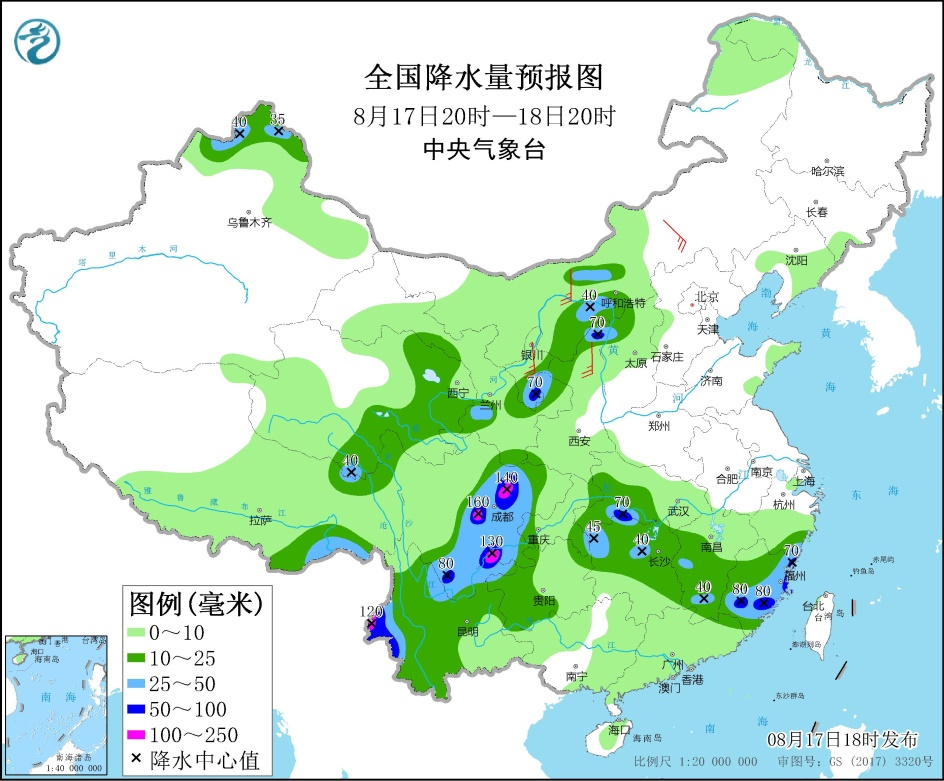
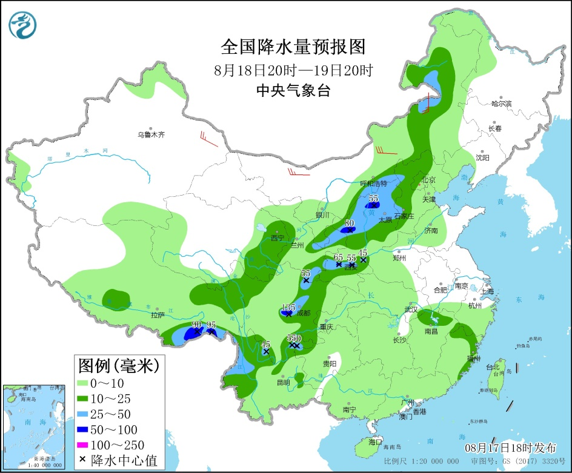

北方地区将有降水过程
西南地区和江南等地多降水
今天白天，浙江中南部、福建东部和西北部、江西中北部、湖南中东部、湖北西南部、四川盆地西部、云南南部及山东东南部、吉林中东部、辽宁东部、青海东部、新疆北部等地出现分散性中到大雨，局地暴雨，江西抚州局地大暴雨（116毫米）。
17日夜间至21日，新疆北疆地区、西北地区、华北、黄淮、东北地区等地自西向东有降水过程，上述部分地区将有中到大雨，局地暴雨，局部并伴有短时强降水、雷暴大风或冰雹等强对流天气。
17日夜间至18日，西南地区、江南等地多降水。其中，四川盆地、江南中东部、云南西部、西藏东南部等地的部分地区有大雨，局地有暴雨或大暴雨；上述部分地区将有短时强降水天气，小时雨量20～50毫米，局地可达60毫米以上。
8月17日20时至18日20时，新疆北部、内蒙古河套地区、西藏东部、西北地区东部、西南地区东部和南部、江汉南部、江南中西部和南部等地部分地区有中到大雨，其中，宁夏南部、陕西北部、湖北南部、福建东部、四川盆地西部、云南东北部和西南部等地部分地区有暴雨或大暴雨（100～160毫米）。内蒙古中西部、宁夏北部、陕西北部等地部分地区有4～5级风（见图1）。

8月18日20时至19日20时，西北地区东部、内蒙古中东部、华北大部、四川盆地、西藏东南部以及江西北部、云南西部等地部分地区有中到大雨，其中，陕西中北部、山西北部、四川盆地西部、西藏东南部等地部分地区有暴雨或大暴雨（100～135毫米）。新疆东部、内蒙古中部等地部分地区有4～6级风（见图2）。

8月19日20时至20日20时，内蒙古东部、东北地区西部、华北东部和南部、黄淮大部、江淮北部、江汉、四川、西藏东南部等地部分地区有中到大雨，其中，黄淮北部以及辽宁西部、四川盆地西部、西藏东南部等地部分地区有暴雨（50～95毫米）。甘肃河西、内蒙古东北部等地部分地区有4～5级风（见图3）。
1.关注18-21日西北地区东部、华北、黄淮及东北等地降雨过程及局地强对流天气；
2.关注四川盆地、江南局地强降雨及可能引发的次生灾害；
3.关注新疆北部局地降雨及可能引发的山洪地质灾害。